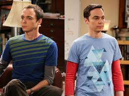

The Big Bang Theory
También conocida como "La teoría del Big Bang" en Latinoamérica, es una comedia de situación norteamericana estrenada el 24 de septiembre de 2007 y finalizada el 16 de mayo de 2019 por la cadena CBS.
La serie comienza con la llegada de Penny, aspirante a actriz, al departamento vecino del que comparten Sheldon y Leonard, dos físicos que trabajan en el Instituto Tecnológico de California (Caltech). Leonard se enamora desde el primer momento de Penny.
Leonard y Sheldon son científicos destacados en Caltech, y amigos de Howard y Raj, que son presentados como unos completos Geeks, alejados de las inquietudes y problemas de la gente común.
Playlist
Canciones principales que se usan durante todas las temporadas de la serie y son las mas icónicas:
Personajes
A continuación, un breve resumen de la características de los personajes principales de la serie:
Dr. Sheldon Cooper
Es brillante y racional pero extremadamente soberbio. Es consciente de que su inteligencia es superior a la de la mayoría de la gente. Tiene varios defectos de personalidad, como ineptitud social, absoluta falta de empatía, inmadurez emocional, humor negro, tendencias racistas involuntarias y es incapaz de detectar el sarcasmo.
Leonard Hofstadter
Es más sociable que sus amigos. Es sincero, detallista y práctico. Del grupo de amigos, es el más emocional y comprensivo. Su compañero de piso es Sheldon, ya que aceptó vivir junto a él y cumplir sus normas a cambio de compartir los gastos. Para Leonard, su mejor amigo es Sheldon.
Howard Wolowitz
Suele vestirse con ropa ajustada, psicodélica y algo retro, su peinado concuerda con su vestimenta. Al principio de la serie se lo presenta como un personaje pervertido y morboso debido a la poca relación que tiene con mujeres a excepción de su madre. Del grupo de amigos, es el más raro de todos. Para Howard, Raj es su mejor amigo.
Penny
Es una chica rubia, joven, guapa y algo alocada, viviendo el sueño americano con metas de ser actriz. Curiosamente, Penny es el único personaje de toda la serie del cual se desconoce su apellido. Es alegre, divertida y liberal pero muy insegura de sí misma. Del grupo de amigos, es la primera mujer del círculo. Aunque Leonard es su novio, tiene cierto nivel de trato amoroso con sus amigos en especial con Sheldon, con el que se comporta maternal y protectora.
Dr. Rajesh "Raj" Koothrappali
Es hindú y graduado de Harvard. Proviene de una familia adinerada. Su objetivo en la vida es poder tener una novia sin que lo cuestione por su actitud. Es igual de presumido que Howard aunque suele verse más desesperado. Debido a su timidez extrema con las mujeres, presume de ser un galán pero, al igual que Howard, termina fácilmente ridiculizado. Para Raj, Howard es su mejor amigo.
Contacto
Si querés conocer más sobre esta serie o enterarte de próximos eventos, podes competar el siguiente formulario: